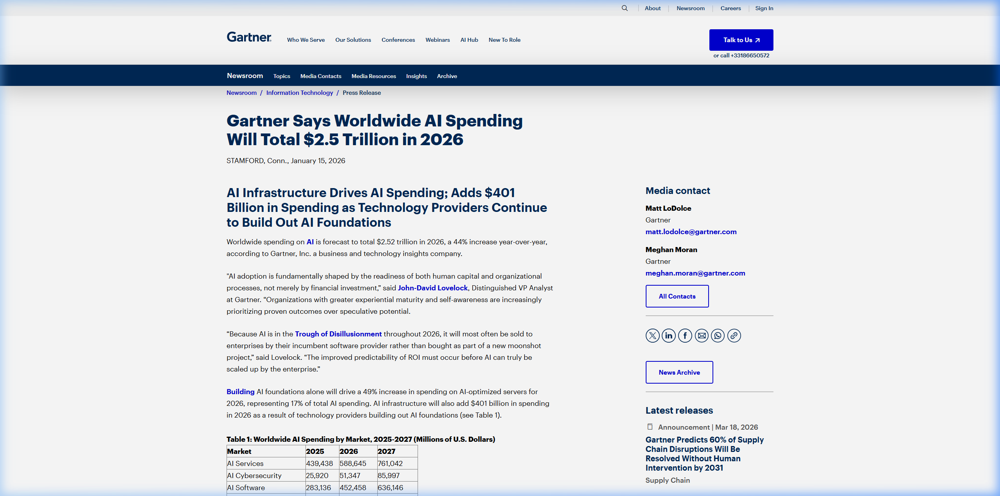
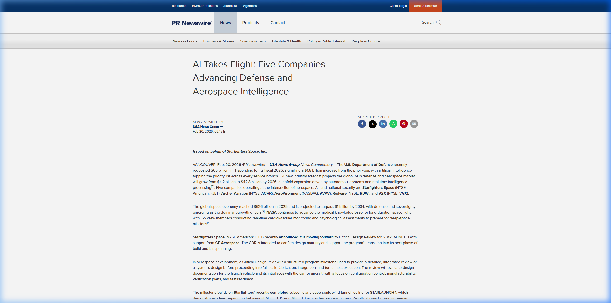
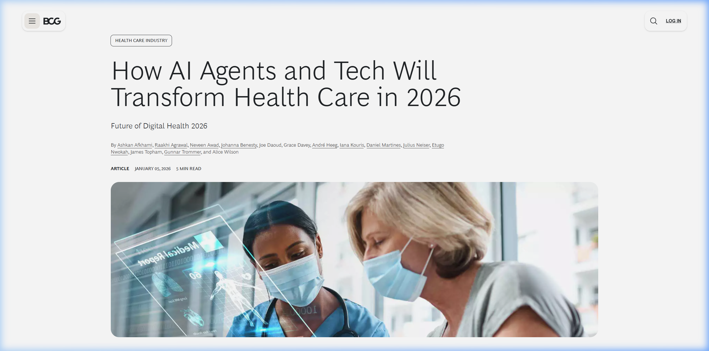
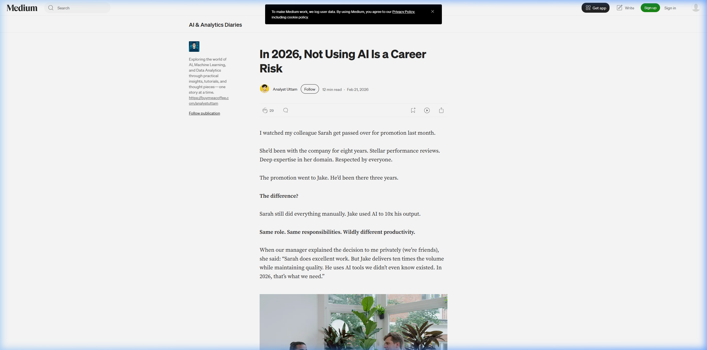

WIA-Europe Symposium 2026
WIA-Europe AI-E Workshop
AI for Everyone: Empowering technical agency through agentic workflows.
Dr. Moulay Anwar Sounny-Slitine | ISU
Sri Varshini Budi & Nina Velimirovic | Leaders, WIA-Europe Strasbourg
WIA-Europe Strasbourg Regional Network
May 6, 2026 | 13:00 CET
Today's Agenda
- 📈 Part 1: The $2 Trillion AI Economy
- ⚖️ Part 2: Gender Bias in AI Adoption
- 🤖 Part 3: The Agentic Paradigm
- 💻 Part 4: Hands-on Lab with Gemini CLI
- ❓ Part 5: Q&A and Closing
Part 1: The Economic Landscape
$2.5T
Global AI Spending by 2026
Source: Gartner / IDC Forecast 2026
From aerospace to healthcare, AI is the new economic engine reshaping every career requirement.




Career Velocity
4.5x
Promotion Probability
Professionals who master AI agents are 4.5x more likely to be promoted. (Source: July 2025 AI Career Transition Study)
💡 The New Literacy
Just as spreadsheets redefined finance and CAD redefined engineering, AI literacy is becoming the baseline expectation across all fields.
Part 2: The Adoption Gap
37%
Female AI Adoption vs 50% Male
Source: Survey of Consumer Expectations (SCE), 2025
Who is steering the ship?
ALL-MALE FRONTIER CEO LEADERSHIP
Where Does the Gap Come From?
❌ The Problem
- • AI tools marketed in technical jargon
- • Male-dominated developer communities
- • Lack of relatable use cases
- • "Imposter syndrome" amplification
✅ The Solution
- • Hands-on, guided workshops
- • Communities like WIA-Europe
- • Practical, domain-relevant exercises
- • Visible female role models in AI
Part 3: The Paradigm Shift
From Prompter to Orchestrator
The most profound shift in AI is not about smarter models. It is about AI that acts rather than answers.
The Agentic Difference
💬 Traditional AI (Chatbot)
- You ask a question
- AI gives a text answer
- You copy-paste manually
- Single turn interaction
🤖 Agentic AI
- You define a goal
- AI plans a multi-step strategy
- AI reads files, writes code, runs tests
- Autonomous execution loop
The Agentic Workflow
🎯 Goal
→
👀 Observe
→
🧠 Plan
→
⚙️ Act
→
🔍 Reflect
↻
The agent cycles through observe, plan, act, and reflect until the goal is achieved. You are the director. The AI is the team.
Part 4: The Agentic Architecture
Building the AI Brain
📄 agents.md
The Constitution. Persistent rules and directives that define the AI's role, technical constraints, and operating style for the entire project.
📑 gemini.md
The Workspace Context. Task-specific roadmaps and analysis generated by the AI to maintain state and memory across prompts.
We don't just prompt; we architect persistence.
Part 5: Hands-on Lab
Meet Gemini CLI
Google's open-source command-line AI agent. It lives in your terminal, reads your agents.md, and executes your mission.
agents.md
+
Terminal
+
Gemini CLI
=
🚀 Action
Let's Build
Head over to the Setup Guide to prepare your workspace for the technical live-build.
Setup Guide →
Thank You
Keep building. Keep leading.